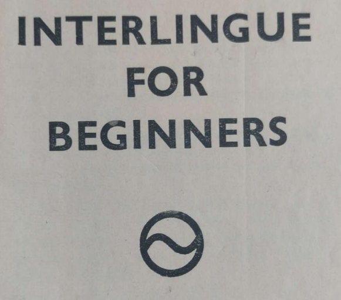

INTERLINGUE FOR BEGINNERS
By Wilfrid E. Reeve
Editoria : Interlingue-Institute
CH-1033 CHESEAUX SVISSIA
1966
Lesson 1
1
Interlingue is phonetic, that is to say, after studying the few rules of pronunciation given below you can read any text without difficulty. At the same time these rules allow us to write the words in a recognizable way.
2
The following consonants are pronounced just as in English -- b d f h k l m n p r t v w y. The letter r should however be trilled and must always be pronounced.
3
The letters c and g have two sounds. Before e and i, c is "ts", elsewhere "k". Before e and i, g is pronounced as in the middle of our word "vision" ; elsewhere as in "go" ; j is also as in "vision".
4
Qu is always "koo" ; z is "dz" ; zz is "ts" and x is "ks" ; ch and sh are as English "sh". The letter s between two vowels is like our "z", elsewhere as in "say". In order to preserve this sharp sound between two vowels we double the s, e.g., "possibil".
5
At the end of words in the combinations tia, tie, tion the "t" sound is followed by "s", e.g., "national" (natseeonahl) unless an s precedes, e.g. "question".
6
Each vowel has two sounds, a short and a long. These are heard in the following series: "pat", "pet", "pit", "pot", "put" and "barn", "bane", "bean", "bone", "boon". There are in Interlingue the following diphthongs: au (as in "cows"), ay (as in "high"), and ey (as in "they"). Other combinations of vowels must be pronounced separately.
7
Vowels are short in unstressed syllables and when followed by two consonants. All other vowels are long ; if however the second consonant is r or l a preceding stressed vowel is long. Hence the first vowels in these words are long : -- "pur", "robe", "blu", "fibre", "table" and short in these : -- "calm", "old", "potte", "flagga".
8
The stress is on the vowel preceding the last consonant. The endings -bil, -ic, -im, -ul, -um, -men and the plural -es however do not take a stress. Unusual stresses are marked, e.g., "societé", "armé".
9
Read these words carefully after studying the above mentioned rules. Most of the words in this lesson will be known to you from their similarity to English : --
special (spehtseeAhl), musica (mOOzica), long, militari, normal, present, rigid, station, stomac, organisation, papere, parte, expert, impulse, lettre, machine, metalle, agreabil, dangere.
Do not forget to sound the final "e".
10
Vocabulary.
| Ie | En |
|---|---|
| li | the |
| un | a |
| es | is, are |
| de | of, from |
| lune | moon |
| blanc | white |
| bocca | mouth |
| apert | open |
| tren | train |
| leer | to read |
| dulci | sweet |
11
"De li" and "a li" are usually abbreviated to "del" and "al", e.g.
Li patre del púer vadet al dom (The boy's father went to the house).
Note how we express the possessive by the use of "del".
12
Read aloud and translate.
Li lune es blanc. Li bocca del mann es apert. Un electric tren es rapid. Leer us un plesura. Un fertil region. Libertá es dulci. Li actressa es famosi.
Lesson 2
1
Nouns that end in a vowel add s to form the plural, those that end in a consonant add -es. Long words in "-ium" add -s.
Li serpente, li seprentes. Li structura, Li structuras. Li circul, li circules. Li person, li persones. Li vocabularium, li vocabulariums.
2
There is one exception to the rule given above. Words in "-c" and "-g" add only -s in order to preserve the hard sounds.
Li plug (plough), li plugs. Li flanc (side), li flancs.
3
Adjectives normally come before the noun but they can be placed after if so desired.
Un nigri cate (a black cat). Un lingue universal (a universal langauge). Li table es solid.
4
It is sometimes necessary for euphonic reasons to add a vowel at the end of a root. We can us -e for general purposes. This is usually regarded as more specifically applicable to nouns ; for adjectives we add -i (compare English "easy", "stringy"). these endings are frequently optional though there is a tendency to standardisation. In some cases the endings are really necessary.
Un povri fémina (a poor woman). Li nocte es obscur (the night is dark). Harmonie es un facte.
5
Adjectives, of course, do not normally take the plural "-s" unless they are used without nouns.
Maria have li verdis e Rosa have li bluis (Mary has the green ones and Rose has the blue ones).
6
Adverbs are formed from adjectives by the addition of the suffix -men ; the final "-i" can be retained if it helps the pronunciation.
Nationalmen (nationally), rigidmen (rigidly).
In many cases however the adjective itself can be used.
Li fémina lude bon (or bonmen), (the woman plays well)
7
Vocabulary.
| Ie | En |
|---|---|
| bell | beautiful |
| grand | big |
| mult | much, many |
| flore | flower |
| porta | wears |
| puella | girl |
| strade | street |
| vade | go, goes |
| atacca | attacks |
8
Exercise.
Li tigre atacca violentmen. Li puella vade delicatmen along li strade. Li dictionariums es important. Li fémina porta un gay blu robe. Li mann have mult moné. Bell flores es un grand plesura.
Lesson 3
1
The personal pronouns are
| Yo | tu | il | ella | it | noi | vu | ili |
|---|---|---|---|---|---|---|---|
| I | thou | he | she | it | we | you | they |
2
As the object of a verb the following forms are used
| Me | te | le | la | it | nos | vos | les |
|---|
Yo ama la (I love her), ella ama me (she loves me).
3
These forms can also be used for the indirect object :
Il da me li lettre (he gives me the letter).
If both the direct and indirect objects are pronouns, the latter comes first.
Il da me it (he gives it to me).
4
After a preposition we use the object forms except for the third person, when "se" is used.
| Ie | En |
|---|---|
| Yo lava me | I wash myself |
| Il lava se | He washes himself |
| Noi lava nos | We wash ourselves |
5
The possessives are :
Mi tu(i) su ; nor (or nostri) vor (or vostri) lor.
Note that su means "his", "her" or "its".
Lor paccage es apert.
6
Some common prepositions are :
| Ie | En |
|---|---|
| ante | before (time) |
| ínter | between |
| a | at |
| circa | around |
| avan | before (place) |
| súper | above |
| tra | through |
| trans | across |
| in | in |
| sub | under |
| che | by, at |
| pos | after |
| sur | on |
7
The feminine is indicated in three ways :
a) by using a different word
púer (boy), puella (girl)
bove (ox), vacca (cow)
b) by the suffix -essa :
poete, poetessa
leon, leonessa
c) by the ending a. In this case we indicate the masculine by -o and the neutral by -e:
Simie, simia, simio (monkey)
8
Vocabulary :
| Ie | En |
|---|---|
| nu | now |
| diversi | various |
| munde | world |
| logia | live |
| fratre | brother |
| fabrica | factory |
| ma | but |
| sestra | sister |
| san | well, healthy |
9
Exercise:
Il da me li orange privatmen. It es nu complet. Generalmen li aere es humid in li region u yo logia. Mi fratre es un director de un fabrica, ma mi sestra es in un laboratoria. Nor movement have mult membres in diversi partes del munde.
Lesson 4
1
The infinitive ends in -r.
| Ie | En |
|---|---|
| amar | to love |
| decider | to decide |
| finir | to finish |
If we cut off the -r we are left with the present stem. You will notice that this ends in one of three vowels.
2
This present stem is used for the present tense and applies to all person and both numbers.
Yo ama, tu ama, il ama, etc. (I love, etc.)
3
The past tense is formed by adding -t to the present stem.
Yo decident ella lavat noi finit
4
The future is formed by the auxiliary "va" and the conditional by "vell".
| Ie | En |
|---|---|
| Ili va ataccar | They will attack |
| Ella va dar me li libre | She will give me the book |
| Il vell venir si il ne vell esser malad | He would come if he were not sick |
5
The past participle is the same as the past tense, e.g., "amat", "decidet", "finit". The present participle is formed by adding -nt to the present stem. In the case of verbs whose root ends in -i however ent is added, e.g., "amant", "decident", "finient".
6
The verb "to have" is "haver" but as an auxiliary this is shortened to "har" :
| Ie | En |
|---|---|
| Vu havet un cane. | You had a dog. |
| Yo ha scrit un articul pri apes. | I have written an article about bees. |
| Ella hat vestit se ante que su amica venit. | She had dressed herself before her friend came. |
| Noi vell har protestat contra li prohibition. | We would have protested against the prohibition. |
7
The passive is formed in the same way as in English.
Note however that the present tense of "esser" is "es".
It es productet de carbon. (It is produced from coal.)
8
Other auxiliaries are shown below. Note that "mey" is invariable.
| Ie | En |
|---|---|
| Ella mey venir | She may come. |
| Tu volet parlar con me. | You wished to speak to me. |
| Noi deve insister. | We must insist. |
| Vu posse partiprender. | You can take part. |
9
The present stem is used as the imperative. A politer form consists of the word "ples" plus the infinitive.
Veni (or) Ples venir. (Come)
10
The participles can be used as adjectives, or by adding -e, -a or -o as nouns.
| Ie | En |
|---|---|
| Li amat filio | The beloved son |
| Li amant matre | The loving mother |
| Li amanto vole besar su amanta | The lover wishes to kiss his beloved |
11
Vocabulary.
| Ie | En |
|---|---|
| deman | to-morrow |
| hodie | to-day |
| yer | yesterday |
| sempre | always |
| que | that |
| nov | new |
| porta | door |
| regul | rule |
| evenir | to happen |
12
Exercise.
Probabilmen il va venir deman. Yo ha sempre regretat que yo nequande respondet a su lettre. Noi discusset lor desires relatent li selection de un nov secretario. Un serviente del guvernament guidat nos tra li porta. Ples observar li regules.